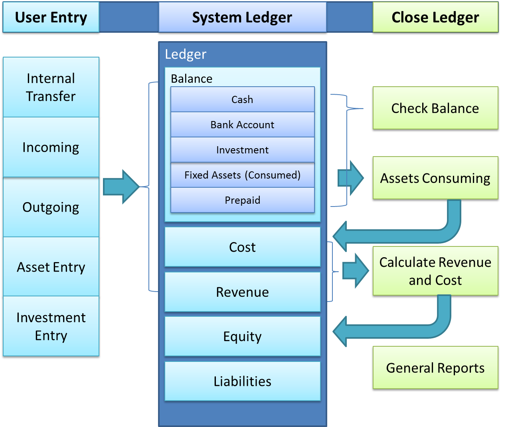

Home/

Document entries provide the function that user can move amount from one G/L account to other account.
| 1. Incoming Recording: | salary, bonus, award, adhoc incoming; transafer REVENUE to CASH, BANK, INVESTMENT or PREPAID accounts. |
| 2. Outgoting Recroding: | transfer money from CASH, BANK, INVESTMENT or PREPAID accounts to COST. |
| 3. Internal Transfer: | Money transfer between CASH, BANK, INVESTMENT or PREPAID accounts; |
| 4. Investment Entry: | Money transfer between CASH or BANK accounts to investment; Besides that, system will save specific information of investemnt. |
| 5. Asset Transfer: | Money transfer between CASH or BANK accounts to fixed assets; Besides that, system will save specific information of assets. |
The Family Accounting system follows Double-entry bookkeeping system. If you have the knowledge of accounting, you can enter the accounting document directly.
For display, user also has two options, record/accounting document.
| Field Name | Tag Name | Description | Is Mandatory |
| Document Number | doc_num | Document number follow the certain order in one month. | Mandatory |
| Fiscal Year | fiscal_year | Fiscal year | Mandatory |
| Fiscal Month | fiscal_month | Fiscal month | Mandatory |
| Posting Date | date | Posting date of the document. Fiscal year and fiscal month related to the posting date. | Mandatory |
| Document Text | text | Description of the document | Option |
| Document Type | doc_type | Document type | Mandatory |
| Is Reversed | is_reversed | Indicator whether the document is reversed(true/false) | Mandatory |
| Document Reference | reference | The id of the document which has the reference to current document.(doc_num + fiscal_year + fiscal_month) | Option |
| Items | item | Line items | Mandatory |
| Field Name | Tag Name | Description | Is Mandatory |
| Document Number | doc_num | Document number follow the certain order in one month. | Mandatory |
| Fiscal Year | fiscal_year | Fiscal year | Mandatory |
| Fiscal Month | fiscal_month | Fiscal month | Mandatory |
| Line number | line_num | Line number | Mandatory |
| Account Type | account_type | Account type of the line item. It has the constraint on Vendor and Customer. If it is the G/L account line item, vendor and customer must be empty. If it is vendor line item, vendor should contain value and customer must be null. If it is customer line item, customer should contain value and vendor must be null. | Mandatory |
| G/L account | gl_account | Financial account | Mandatory |
| Vendor | vendor | Vendor account | Option |
| Customer | customer | Customer account | Option |
| Amount | amount | Amount | Mandatory |
| Credit/Debit Indicator | cd_indicator | Credit/Debit Indicator | Mandatory |
| Business Area | business_area | Business area | Option |
The Family Accounting system follows Double-entry bookkeeping system. The records are called accounting documents in terms of Financial Accounting. For example, user enters the record below:
| Outgoing: | Subway |
| Account: | Cash |
| Amount: | 5.00 |
| Segment: | For work |
In the backend, the system will generate one accounting document and two line items. And the balance of this document is zero.
| Acount | Credit/Debit | Amount | Segment |
| Subway | Debit | 5.00 | For work |
| Cash | Credit | -5.00 |
It is just a simple sample. In system, it is much more complex.
Now, we know that when a record entry by the user, the system will generate a document with header and several line items according
to the customizing. And then system will save such things in the backend. In the storage files, documents is stored as XML format.
User can customize both the layout and the default value in system customizing.